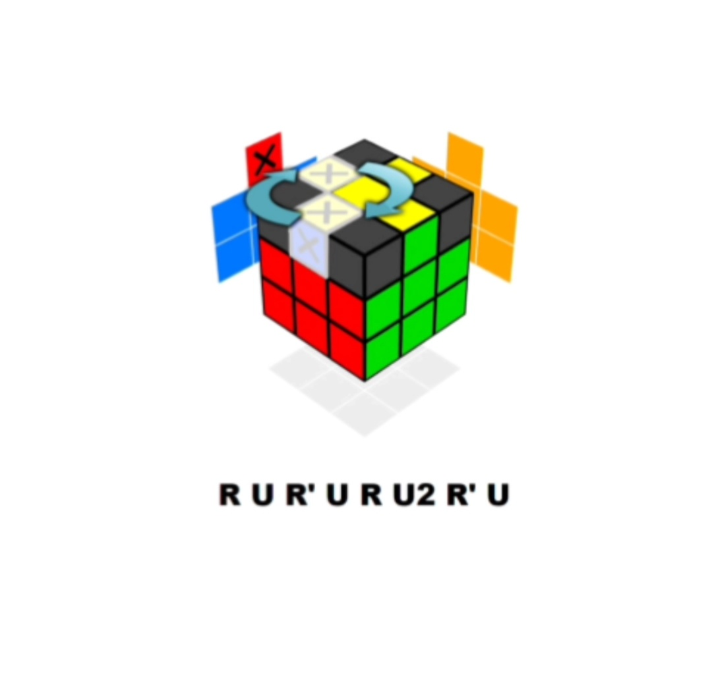

To get started I recommend you to read this basic and you will need to know the rubiks cube notation ie what the letter mean in the algorithms
| Clockwise rotations: |
|
To keep a record of your solution times click here.

Your aim here is to move the white edges such that they surround the yellow center at the top of the rubik's cube.
The first 3 edges will be easy, just try! you can do it
The last edge can be a little tricky. Below are 3 cases that you may face.


You have successfully completed your first layer. Practice this steps until you become perfect in it.


⟶ To make the white cross,turn the up layer till you get
the two middel edges on one side matching as shown in above fig. Then
doR↓R↓

⟶After you done with earlier step you will have one piece of the
white cross done.Repeat for the other 3 white edges to form a complete white
cross on the rubik's cube
⟶Now your cube look like the above fig.Now you
are perfect with basics
|
YOUR AIM IS TO INSERT THE RIGHT CORNER BETWEEN THE CROSS AND FORM THE FIRST LAYER OF THE RUBIK'S CUBE
Follow the video it helps you to solve the corners.
First, place the white layer at the bottom, make a reverse T shape on your facing side. Make sure that the top side of center piece is not yellow.If you see this partten on the cube go ahead to video mentioned below. In the above video you can see some solutions to slove the 2nd layer Special cases |
After you are done with the second layer on the rubik's cube, you will be facing with 4 case.CASE 1. THE YELLOW CROSS US ALREADY DONE (AS SHOWN ABOVE) THE YELLOW CROSS US ALREADY DONE (AS SHOWN ABOVE)
CASE 2  DO (F R U R' U' F')×3
{NOTE: hold the rubiks cube as shown in the figure.}
DO (F R U R' U' F')×3
{NOTE: hold the rubiks cube as shown in the figure.}
CASE 3  DO (F R U R' U' F')×2
{NOTE: hold the rubiks cube as shown in the figure.}
DO (F R U R' U' F')×2
{NOTE: hold the rubiks cube as shown in the figure.}
CASE 4  DO (F R U R' U' F')
{NOTE: hold the rubiks cube as shown in the figure.} DO (F R U R' U' F')
{NOTE: hold the rubiks cube as shown in the figure.}
This clip will help you to get visual idea. To finish top yellow cross.Now moving the edges to match the sides of the Rubik's cubeYour Goal - move the top layer middle edges such that the sides of the Rubik's Cube are matching as shown above. |


Your Goal - move the last 4 corners such that they are in the right place on the rubik's cube, but not necessary oriented correctly(i.e twisted wrongly) 
First, check if any of the conrners are already in the right place. In the example above fig, the corner with RED, GREEN and YELLOW are in the right place,but the rest of them are not.if you have a correct corner piece then have it at the right front, facing to you as show in fig. DO ( U R Ui Li U Ri Ui L) untill you get all the corner pieces to their right spot.{NOTE: LOOK AT THE BELOW PICTURE FOR BETTER IDEA} 
If you are facing any trouble to understand above algorithms go to this video. It helps for better understanding and catch a grip on the algorithm |
|
R' D' R D-Algorithm
Your Goal - orient(turn) the corners and slove the rubik's cube When you reach this final step all the corners are in right spot, you just have to orient the last layer corners (which are now on the top of the puzzle) Hold the cube in your hand so the upper piece you want to orient is on the front-right-topcorners, then do the algorithm twice or four times until that specific piece is oriented correctly: {NOTE: In the meantime it might seem like you messed up the whole cube but don't worry, it will be all right when all the corner .} When a yellow corner is oriented correctly,turn only the top layer to move another yellow corner piece you want to orient to the front-right-top corner of the cube and repeat R' D' R D again until this specific piece is correctly matched. Keep doing this until your Cube is sloved. Two wrong pieces next to each other: do R' D' R D twice for one corner and rotate the top layer until you get unsolved corner on front-top-right and repeat the algorithm until you get the corner solved. SEE THE VIDEO FOR BETTER UNDERSTANDING, THE ALGORITHMExample 2. For three corners: The algorithm has to be applied twice for each corner. Example 3. Two corners on Opposite sides. Example 4. When all yellow corners are twisted, you need to slove all the 4 corners by the algorithm until the yellow colour of the piece come on top of each piece. FOR BETTER UNDERSTANDING WATCH THE VIDEO. |